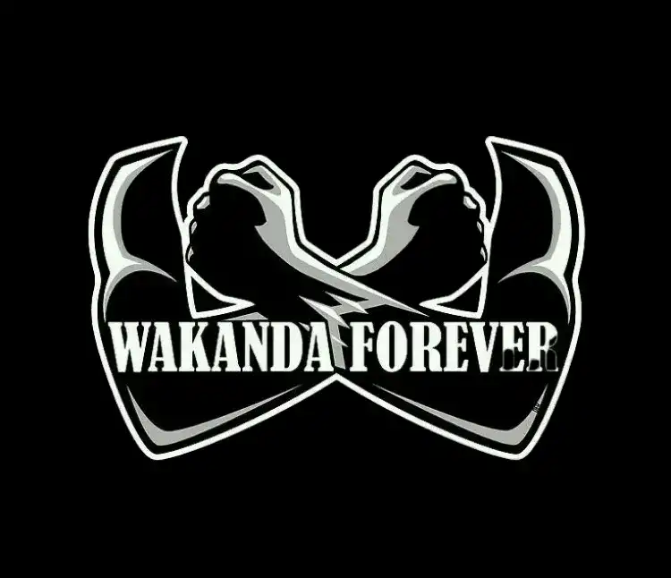
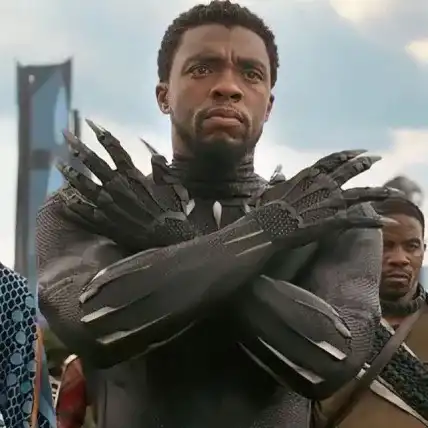
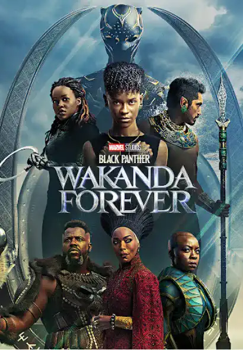
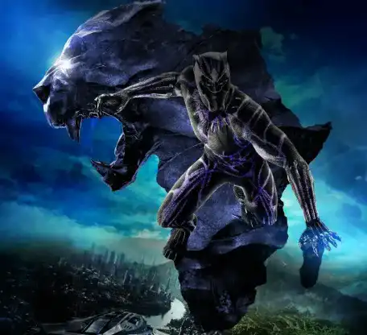

<!DOCTYPE html>
<!DOCTYPE html>
<html lang="en"x-data="{menuIsOpen: false}" :class="{noscroll:menuIsOpen}"></html>
<head>
    <meta charset="UTF-8">
    <meta http-equiv="X-UA-Compatible" content="IE=edge">
    <meta name="viewport" content="width=device-width, initial-scale=1.0">
    <link rel="stylesheet" href="../src/css/style.css">
    <link rel="alternate" hreflang="fr" href="http://architect.claudesamba.fr
    " />
<link rel="alternate" hreflang="es" href="http://architect.claudesamba.fr
" />
<link rel="alternate" hreflang="de" href="http://architect.claudesamba.fr
" />
    <script defer src="https://unpkg.com/alpinejs"></script>
    
    
    <title>Réplique</title>
   
    <link rel="icon" href="../public/icones/logo.svg" />
</head>

<body>
    <header class="header">
       
        <div class="header__logo-lang">
        <a href="../fr/index.html" onclick="document.cookie = 
        `nf_lang=en; path=/ ; SameSite=Strict`
        ">
          
        </a>
        </div>
        <div class="header__logo">
             <a class="header__link-logo" href="/en/index.html">KULTURE</a>
        </div>


        <button  class="header__menubtn menubtn" aria-controls="mainNav" @click="menuIsOpen = !menuIsOpen" :class="menuIsOpen &&'menubtn--open'" >
            <span class="menubtn__bar"></span>
        </button>

          <nav  id="mainNav" class="header__menu menu"  x-show="menuIsOpen" x-transition.duration.800ms >
             
                <a  class="page-title" href="../en/index.html">
                    KULTURE
                </a>
            

            <ul class="menu__list">

                <li class="menu__item">
                    <a  class="menu__link "href="movie.html">
                        Black Panther
                    </a>
                </li>


                <li class= "menu__item">
            <a class="menu__link "href="director.html">
                Ryan Coogler
            </a>
        </li>


        <li class= "menu__item">
            <a class="menu__link "href="music.html">
              Lift Me Up 
                 
            </a>
        </li>


        <li class= "menu__item">
            <a class="menu__link " href="book.html">
        A nation under our feet 
        </a>
    </li>


        <li class= "menu__item">
            <a class="menu__link " href="formulaire.html">
            Contact
        </a>
    </li>

      
    </header>


    <main>
    <h1 class="titre_article">  “ Wakanda forever “ - Le pouvoir , l’unité que cache une réplique. </h1>
<p class="date_publication"> Par Claude MALANDA 
    </p> 
    
    <p class="date_publication"> Publier le 24 / 10 / 2024 , mis à jour aujourd’hui à 9h45
    </p>
    

    <div class="chapo">

    <p> À l'évocation de la phrase "Wakanda Forever", une image de fierté, d'unité et de solidarité se forme instantanément dans l'esprit de nombreux individus. Cette réplique, devenue un symbole puissant, va bien au-delà des écrans de cinéma. </p>
    </div>
    
    <div class="image-container">
    
   </div>

 <p> La réplique emblématique "Wakanda Forever" a acquis une signification profonde depuis sa première utilisation mémorable dans le film "Black Panther" sorti en 2018. Initialement, elle est prononcée lors du dernier combat épique entre T'Challa et Erik Killmonger, symbolisant la détermination du roi T'Challa à défendre son royaume et son peuple. Le cri de guerre résonne alors comme un appel à l'unité et à la résistance face à l'adversité.</p>

 <div class="section_clair">

    <div class="image-container">
 
</div>

 <p> Elle est généralement utilisée comme salutation par la suite et est très souvent accompagnée d’un geste.
</p>

<p> Ce geste d’après le réalisateur du film, cette salutation lui a été inspirée par les pharaons. En effet, ces derniers une fois mort sont installés de telle d’une certaine à ce que leur bras soit croisé au niveau de leur torse ; il affirme en plus que cette salutation fait référence au mot “ câlin” dans la langue des signes.

</p> 
</div>

<div class="image-container">

</div>
<p>La réplique emblématique “Wakanda Forever" conserve son pouvoir symbolique et émotionnel dans la continuité du film sorti en 2022 "Black Panther: Wakanda Forever". Elle reste un cri de ralliement pour honorer la mémoire de Chadwick Boseman, l'interprète original de Black Panther. "Black Panther: Wakanda Forever" rend hommage à cette réplique en la réintégrant dans l'intrigue du film, montrant ainsi que l'esprit de Wakanda perdure malgré les défis auxquels le royaume est confronté. En ce sens nous pouvons affirmer que "Wakanda Forever" reste un élément clé, un héritage de Black Panther.
   </p> 

   <div class="section_clair">

    <div class="image-container">
    
    </div>
   
    <p> La réplique ne se limite pas qu'à être une phrase de film emblématique, elle est un cri qui unifie, elle évoque l’union au sein du Wakanda dans la mesure où dans le film, elle exprime l’unité du peuple wakandais. Elle rappelle à ce peuple son histoire, sa loyauté et son dévouement à leur héros  Black Panther.
   </p>
   
   <p>
    L’impacte de cette phrase “ wakanda forever’ dans la vie réelle est dans sa capacité d’unir des individus à travers le monde qu’ils soient blancs, noirs, asiatique ou d’une autre quelconque origine. Les fans se sont appropriés ce cri qu’il rallie à l’égalité, la diversité et la justice.
   </p> 

   <p> Lire aussi <a  > On sait d'où vient le salut emblématique de Bla4ck Panther      </a></p>
   </div>


<h2> Découvrer la bande-annoce de film Black Panther</h2>

<div class="image-container">
<video  width=85% controls>
    <source src="../public/video/bande_annonce1.mp4" type="video/mp4">
   
</video>
</div>
</main>
<footer class="footer">

    <div class="menu--separation">
      <span class="menu__barresep"></span>
  </div>

    <div class="footer-colum">
        

        <div class="menu__container">
            <p class="footer__texte">Claude MALANDA</p>
            <a class="footer__mail" href="mailto:claude.malamda_samba@edu.univ-fcomte.fr">claude.malamda_samba@edu.univ-fcomte.fr</a>

            <div class="reseau">
                <a href="#">
                    
                </a>
                <a href="#">
                    
                </a>
                <a href="#">
                    
                </a>
            </div>
        </div>
   

    
        <div class="footer_p">

          
            <p><a class="footer__lien-title" href="../en/about.html">About</a>
            </p>
            
           <p><a class="footer__lien-title"  href="../en/about.html">Glossary</a></li>
           </p> 
            <p><a class="footer__lien-title"   href="../en/other.html">Other projects</a>
           </p>

        
           
        </div>
</div>
        <p class="footer__p">
          Project carried out as part of an educational exercise at the
            <a class="footer__link" href="http://mmimontbeliard.com/contact">
              Montbéliard MMI department
            </a>
        </p>
    
</footer>

</body>
</html>